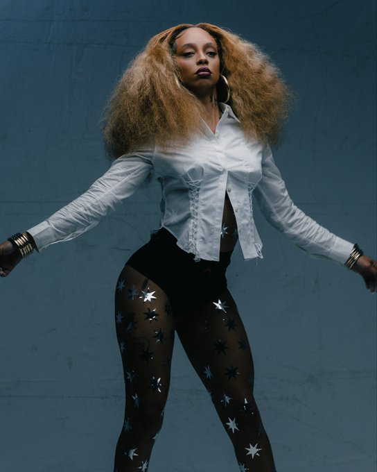
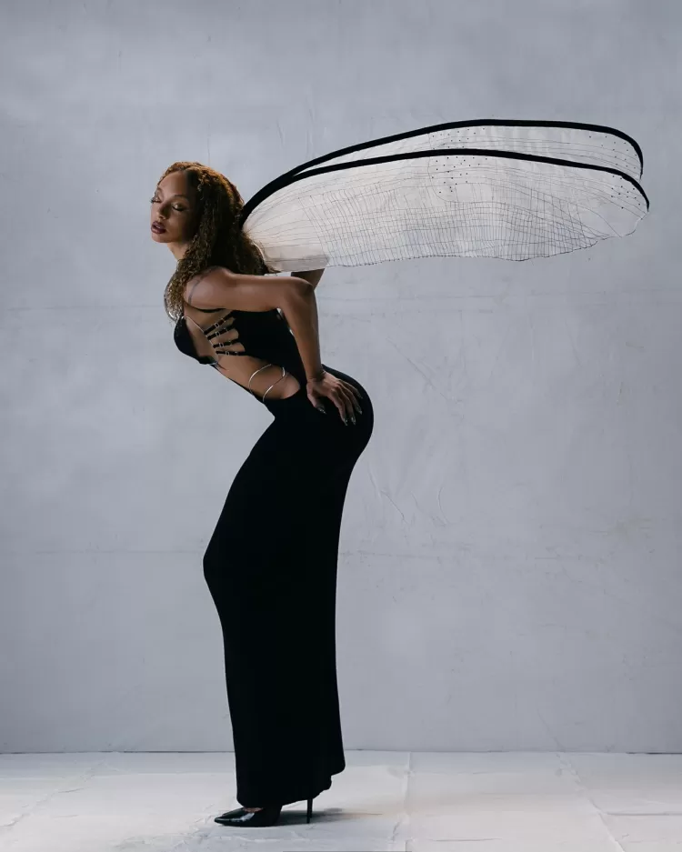
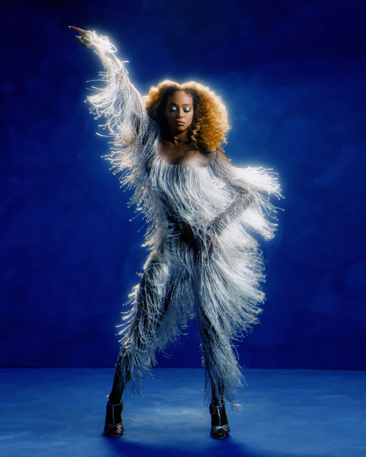

Quem é Urias?
Urias é uma cantora brasileira que mistura pop, eletrônico e identidade visual forte, se destacando como uma das artistas mais autênticas da cena atual.
Tudo sobre a diva e seu novo álbum :contentReference[oaicite:1]{index=1}

Urias é uma cantora brasileira que mistura pop, eletrônico e identidade visual forte, se destacando como uma das artistas mais autênticas da cena atual.

Além da música, Urias chama atenção pelos visuais marcantes, com estética futurista, fashion e extremamente artística.

O álbum Carranca traz uma sonoridade intensa e experimental, mostrando ainda mais a evolução artística de Urias.